Permite instalar un Sistema Operativo dentro de otro.
2.2 Descarga
https://www.virtualbox.org/wiki/Downloads
Descarga de VirtualBox
2.3 Instalación
Elegir la versión adecuada para el Sistema Operativo que tenemos instalado.
Intalar de la forma habitual dependiendo del Sistema Operativo instalado.
3 Descargar Ubuntu
3.1 Ubuntu
Ubuntu es una districución Linux muy utilizada.
3.2 Enlace
http://www.ubuntu.com/download/desktop
Enlace de Ubuntu
3.3 Donativo
Al pulsar el botón "Download", nos lleva a una página para realizar una donación, y si no queremos donar y continuar pulsamos en la parte inferior en "Not now, take me to the download".
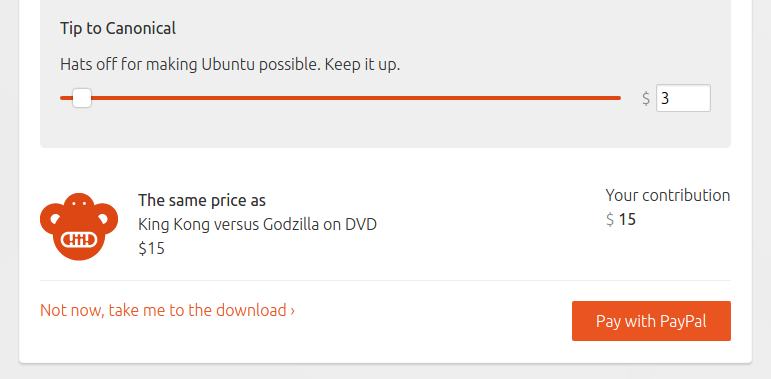Donativo de Ubuntu
3.4 Descarga
La descarga coomenzará automáticamente, pero si no lo hiciera pulsamos sobre "download now".
Descarga de Ubuntu
4 Crear Máquina Virtual
4.1 Abrir VirtualBox
Abrimos VirtualBox:
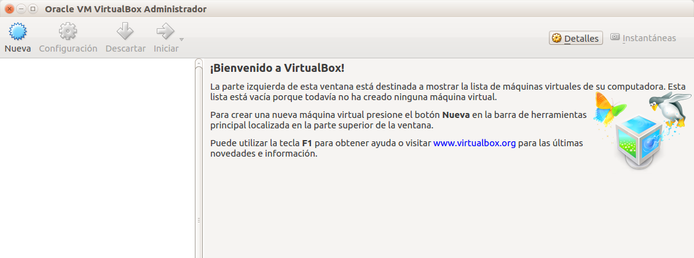Abrir VirtualBox
4.2 Nueva Máquina Virtual
Pulsamos sobre "Nueva" para añadir una nueva máquina virtual.
Nueva Máquina Virtual
4.3 Nombre Máquina Virtual
En el asistente insertamos en el nombre "Ubuntu".
Nombre Máquina Virtual
4.4 Memoria Máquina Virtual
Elegimos la cantidad de memoria reservada a Ubuntu:
Memoria Máquina Virtual
4.5 Crear Disco Virtual
Seleecionamos "Crear disco virtual ahora".
Crear Disco Virtual
4.6 Tipo Disco Virtual
Seleccionamos VDI(VirtualBox Disk Image).
Tipo Disco Virtual
4.7 Tipo Almacenamiento
Seleccionamos "Reservado dinámicamente".
Tipo Almacenamiento
4.8 Ubicación y Tamaño
Podemos seleccionar la ubicación y el tamaño del disco virtual.
Ubicación y Tamaño
4.9 Finalizar
Si todo ha salido bien nos aparecerá la máquina recién creada en VirtualBox.
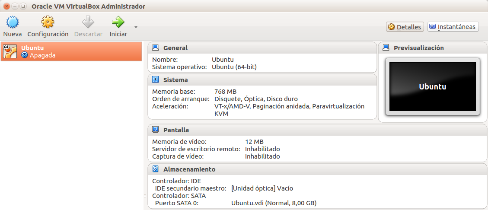Listar Máquina Virtual
4.10 Configurar Máquina Virtual
4.11 Abrir configuración
Seleccionamos máquina recién creada y pulsamos en "Configuración".
Abrir configuración
4.12 Configurar almacenamiento
Pulsamos sobre "Almacenamiento".
Configurar almacenamiento
4.13 Seleccionar CD Virtual
Pulsamos sobre el icono "CD" del cuadro "Árbol de almacenamiento" del árbol "Controlador:IDE" que aparece vacío.
Seleccionamos CD
4.14 Buscar archivo
Pulsamos en el icono "CD" de la parte de la derecha.
Buscar archivo
4.15 Seleccionar ISO
Buscamos el archivo ISO de Ubuntu anteriormente descargado.
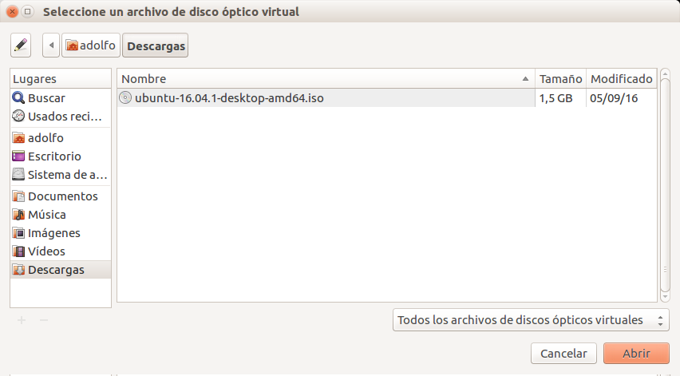Seleccionar ISO
4.16 Cerrar configuración
Si todo ha salido bien nos aparecerá el ISO en la configuración.
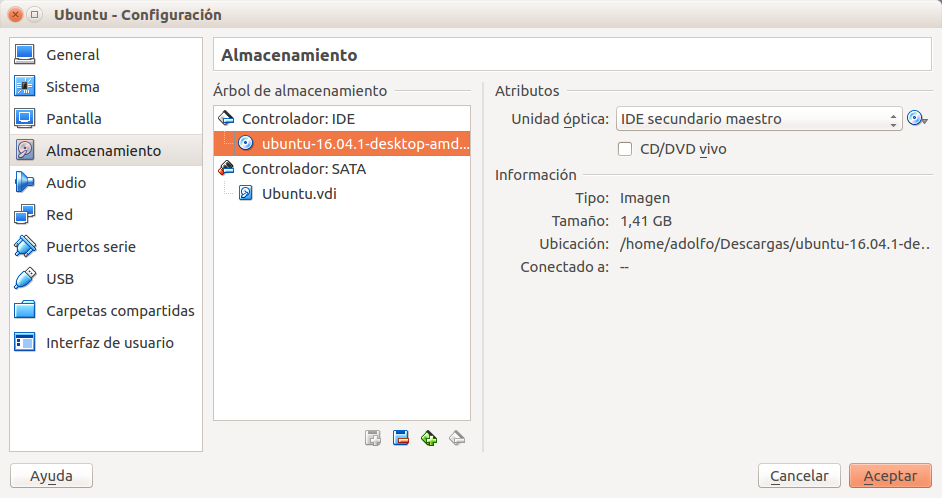Cerrar configuración
4.17 Finalizar
Si todo ha salido bien nos aparecerá la máquina con la ISO en VirtualBox.
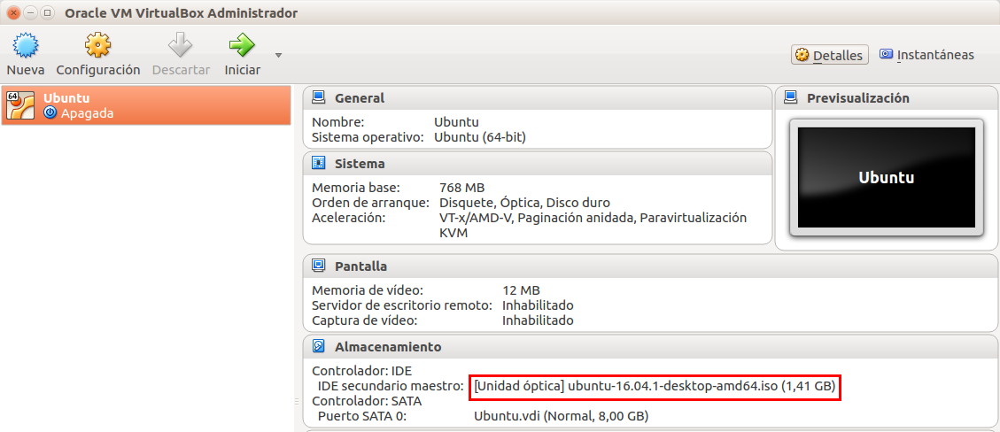Listar Máquina Virtual
5 Intalar Ubuntu
5.1 Iniciar Máquina Virtual
Pulsamos sobre el icono de "Iniciar", y el sistema empieza a cargarse.
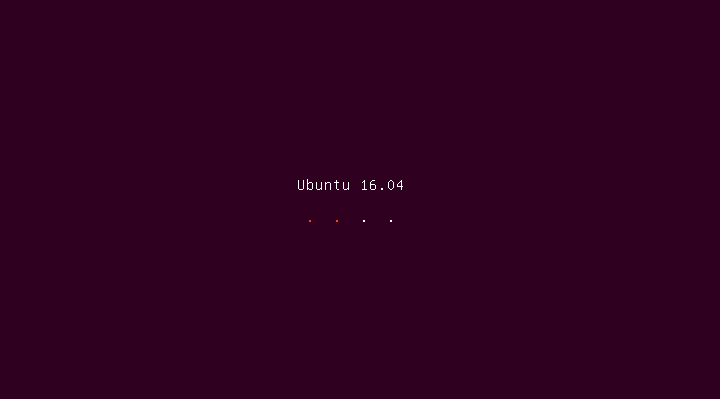Inicia Máquina Virtual
5.2 Seleccionar idioma
Seleccionamos "Español" y pulsamos en "Instalar Ubuntu".
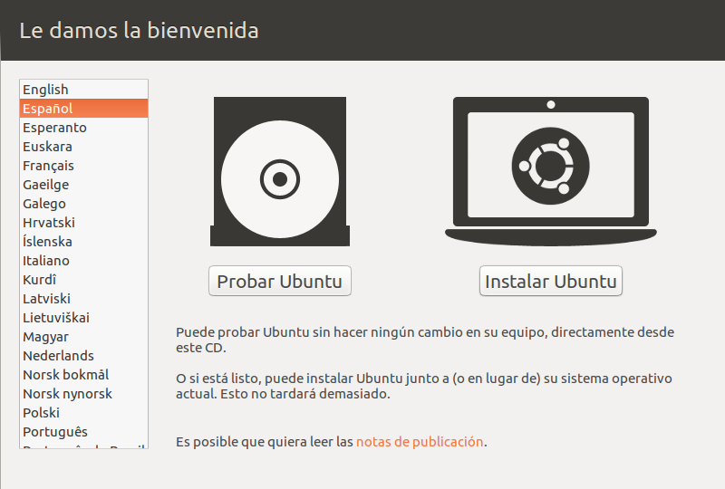Seleccionar idioma
5.3 Descagas opcionales
Podemos seleccionar ciertas Descargas opcionales.
Descagas opcionales
5.4 Tipo de instalación
Seleccionamos "Borrar disco e instalar Ubuntu".
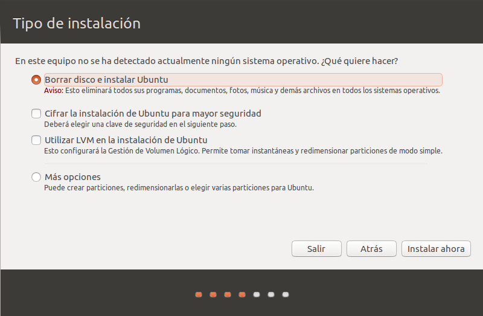Tipo de instalación
5.5 Adevertencia
Acepamos la advertencia de "cambios en los discos"".
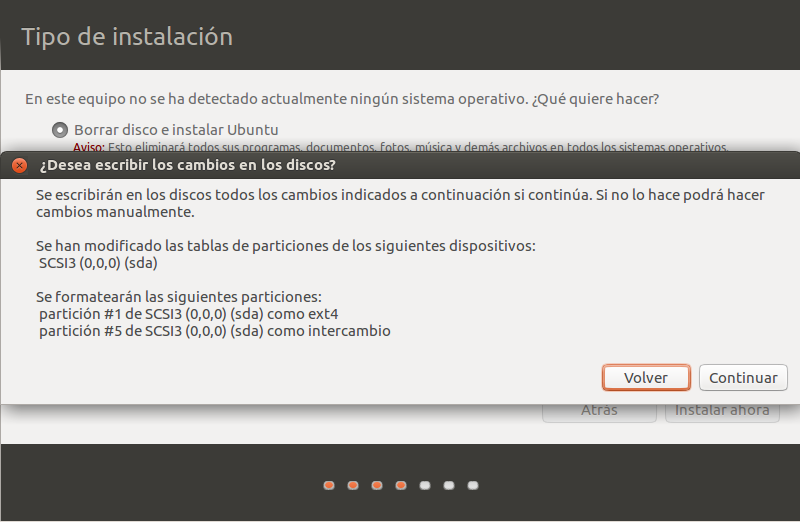Adevertencia
5.6 Ubicación
Introducimos "Madrid" como ubicación.
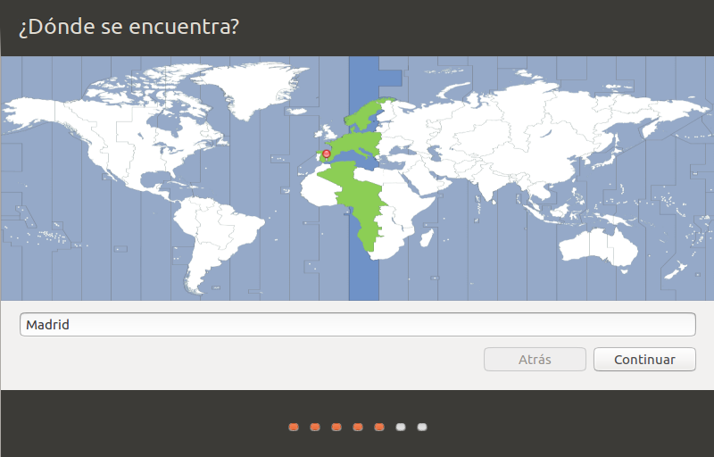Ubicación
5.7 Teclado
Seleccionamos el "tipo de teclado" de nuestro ordenador.
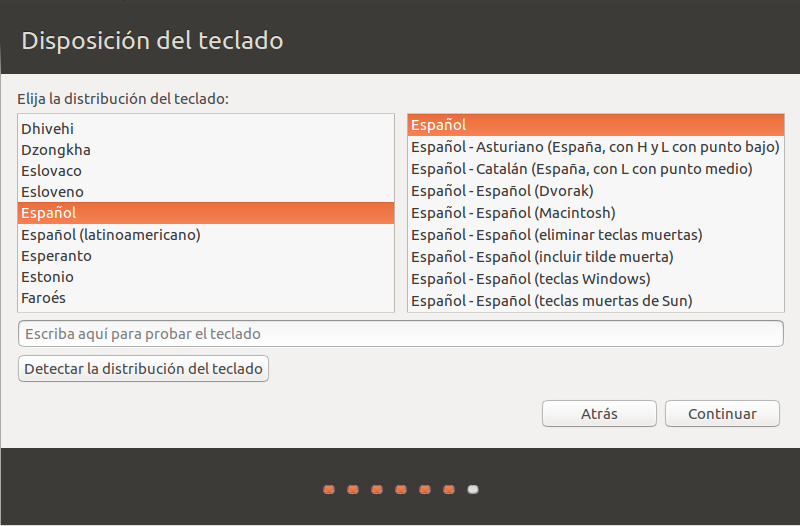Teclado
5.8 Usuario y contraseña
Introducimos "Usuario y contraseña".
Usuario y contraseña
5.9 Esperar
Esperamos a que la instalación termine.
Esperar
5.10 Reiniciar
Pulsamos en "Reiniciar ahora"
Reiniciar
5.11 Pulsar ENTER
Pulsamos "ENTER" para finalizar.
Pulsar ENTER
5.12 Cargar Ubuntu
Después del último paso se carga Ubuntu.
Cargar Ubuntu
5.13 Apagar Ubuntu
Pulsamos en el botón situado en la parte superior derecha.
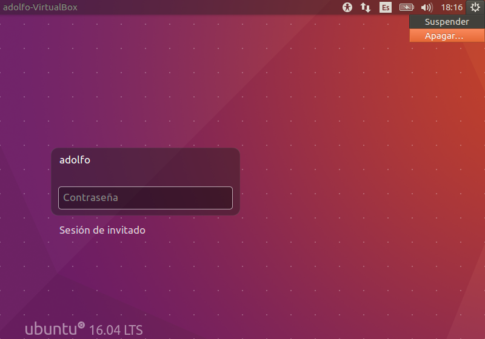Apagar Ubuntu
5.14 Finalizar
Aparece una ventana y pulsamos "Apagar"
Finalizar
5.15 Rearancar
La próxima vez que queramos ejecutar el sistema pusaremos en "Iniciar".
Listar Máquina Virtual
6 Importar Máquina Virtual
6.1 ¿Qué es eso?
Podemos importar máquinas anteriormente creadas.
6.2 Importar VDI
Creamos una máquina virtual igual que antes, pero al crear el Disco Virtual seleccionamos el archivo VDI.
Importar VDI
6.3 Importar OVF
Pulsamos en "Archivo > Importar servicio virtualizado..." y seleccionamos el archivo OVF.
Importar OVF
6.4 Exportar OVF
Para ello pulsamos en "Archivo > Exportar servicio virtualizado..." y seguimos las instrucciones.